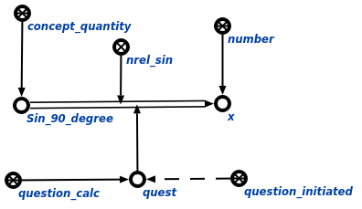

Задачей агента вычисления тригонометрических выражений является вычисление тригонометрических выражений. Данный агент инициируется при условии появления в памяти вопросной конструкции, соответствующей запросу вычисления математического выражения. Аргументом запроса является связка тригонометрического отношения - либо синус*, либо косинус*, либо тангенс*. Пример вопросной конструкции представлен ниже:
